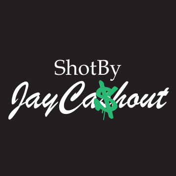
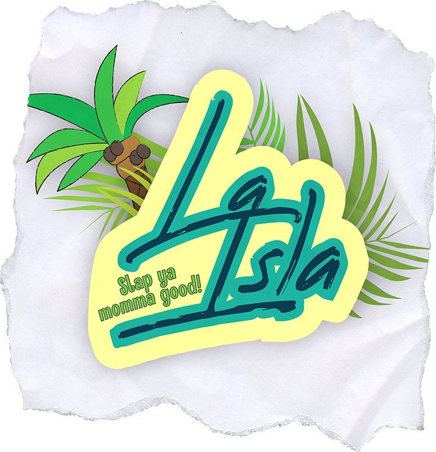
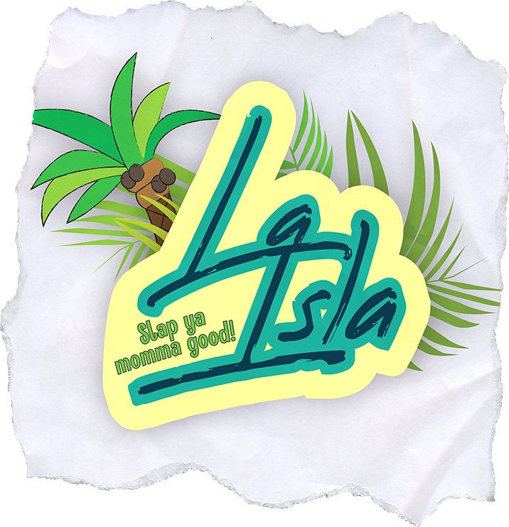

I made this logo in the summer of ‘23 for a coworker whose side job is photography. He is based in the city of New York and wanted a logo for his brand. So I gave him a few options and this logo was one of them. I wanted to exaggerate the meaning of his name a little by putting a dollar symbol on top of the “s” in “Cashout”. Then I stylized the dollar symbol to resemble New York City graffiti.


 
